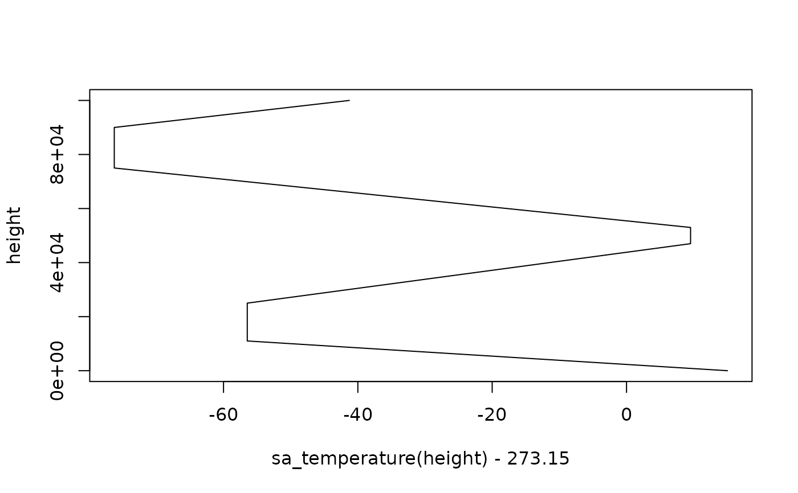

Utilities to use the International Standard Atmosphere. It uses the International Standard Atmosphere up to the tropopause (11 km by definition) and then extends up to the 500 km using the ARDC Model Atmosphere.
sa_pressure(height)
sa_height(pressure)
sa_temperature(height)
sa_height_trans(pressure_in = "hPa", height_in = "km")
sa_pressure_trans(height_in = "km", pressure_in = "hPa")
sa_height_breaks(n = 6, pressure_in = "hPa", height_in = "km", ...)
sa_height_axis(
name = ggplot2::waiver(),
breaks = sa_height_breaks(pressure_in = pressure_in, height_in = height_in),
labels = ggplot2::waiver(),
guide = ggplot2::waiver(),
pressure_in = "hPa",
height_in = "km"
)
sa_pressure_axis(
name = ggplot2::waiver(),
breaks = scales::log_breaks(n = 6),
labels = scales::number_format(drop0trailing = TRUE, big.mark = "", trim = FALSE),
guide = ggplot2::waiver(),
height_in = "km",
pressure_in = "hPa"
)Arguments
- height
height in meter
- pressure
pressure in pascals
- height_in, pressure_in
units of height and pressure, respectively. Possible values are "km", "m" for height and "hPa" and "Pa" for pressure. Alternatively, it can be a numeric constant that multiplied to convert the unit to meters and Pascals respectively. (E.g. if height is in feet, use
height_in = 0.3048.)- n
desiderd number of breaks.
- ...
extra arguments passed to scales::breaks_extended.
- name, breaks, labels, guide
arguments passed to
ggplot2::sec_axis()
Details
sa_pressure(), sa_height(), sa_temperature() return, respectively,
pressure (in pascals), height (in meters) and temperature (in Kelvin).
sa_height_trans() and sa_pressure_trans() are two transformation functions
to be used as the trans argument in ggplot2 scales (e.g. scale_y_continuous(trans = "sa_height").
sa_height_axis() and sa_pressure_axis() return a secondary axis that transforms to
height or pressure respectively to be used as ggplot2 secondary axis
(e.g. scale_y_continuous(sec.axis = sa_height_axis())).
For convenience, and unlike the "primitive" functions, both the transformation functions and the axis functions input and output in hectopascals and kilometres by default.
References
Standard atmosphere—Glossary of Meteorology. (n.d.). Retrieved 22 February 2021, from https://glossary.ametsoc.org/wiki/Standard_atmosphere
Examples
height <- seq(0, 100*1000, by = 1*200)
# Temperature profile that defines the standard atmosphere (in degrees Celsius)
plot(sa_temperature(height) - 273.15, height, type = "l")

# Pressure profile
plot(sa_pressure(height), height, type = "l")
# Use with ggplot2
library(ggplot2)
data <- data.frame(height = height/1000, # height in kilometers
pressure = sa_pressure(height)/100) # pressures in hectopascals
# With the sa_*_axis functions, you can label the approximate height
# when using isobaric coordinates#'
ggplot(data, aes(height, pressure)) +
geom_path() +
scale_y_continuous(sec.axis = sa_height_axis("height"))
 # Or the approximate pressure when using physical height
ggplot(data, aes(pressure, height)) +
geom_path() +
scale_y_continuous(sec.axis = sa_pressure_axis("level"))
# When working with isobaric coordinates,using a linear scale exagerates
# the thickness of the lower levels
ggplot(temperature[lat == 0], aes(lon, lev)) +
geom_contour_fill(aes(z = air)) +
scale_y_reverse()
# Or the approximate pressure when using physical height
ggplot(data, aes(pressure, height)) +
geom_path() +
scale_y_continuous(sec.axis = sa_pressure_axis("level"))
# When working with isobaric coordinates,using a linear scale exagerates
# the thickness of the lower levels
ggplot(temperature[lat == 0], aes(lon, lev)) +
geom_contour_fill(aes(z = air)) +
scale_y_reverse()
 # Using the standard atmospehre height transormation, the result
# is an approximate linear scale in height
ggplot(temperature[lat == 0], aes(lon, lev)) +
geom_contour_fill(aes(z = air)) +
scale_y_continuous(trans = "sa_height", expand = c(0, 0))
# The result is very similar to using a reverse log transform, which is the
# current behaviour of scale_y_level(). This transformation slightly
# overextends the higher levels.
ggplot(temperature[lat == 0], aes(lon, lev)) +
geom_contour_fill(aes(z = air)) +
scale_y_level()
# Using the standard atmospehre height transormation, the result
# is an approximate linear scale in height
ggplot(temperature[lat == 0], aes(lon, lev)) +
geom_contour_fill(aes(z = air)) +
scale_y_continuous(trans = "sa_height", expand = c(0, 0))
# The result is very similar to using a reverse log transform, which is the
# current behaviour of scale_y_level(). This transformation slightly
# overextends the higher levels.
ggplot(temperature[lat == 0], aes(lon, lev)) +
geom_contour_fill(aes(z = air)) +
scale_y_level()